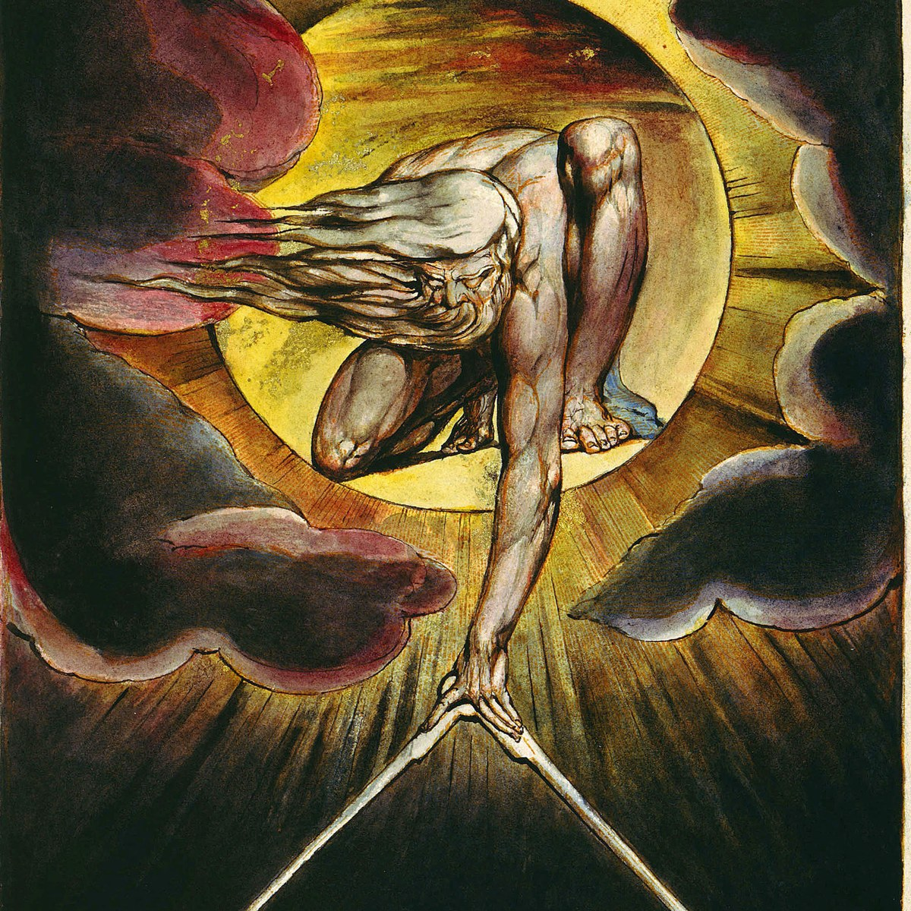

- Fitouchi, L., André, J.-B. & Baumard, N. (2023). Moral disciplining: the cognitive and evolutionary foundations of puritanical morality (Target article). Behavioral and Brain Sciences 46, e293. (responses to commentaries here) PDF
- Fitouchi L., Singh, M., André, J.-B., Baumard, N. (2025). Prosocial religions as folk-technologies of mutual policing. Psychological Review, 132(6), 1410-1437 PDF
- Fitouchi, L. & Singh, M. (2026). Retributive sentiments track both deterrent and compensatory concerns in a small-scale society and a WEIRD sample. Psychological Science, 37(6), 392-410. PDF
- Fitouchi L. & Nettle, N. (2025). Harmless bodily pleasures are moralized because they are perceived as reducing self-control and cooperativeness. Cognition, 262, 106154 PDF
- Fitouchi, L., & Singh, M. (2023). Punitive justice serves to restore reciprocal cooperation in three small-scale societies. Evolution and Human Behavior, 44(5), 502-514. PDF
- Lie-Panis, J., Fitouchi, L., Baumard, N., André, J.-B (2026). Why human societies adopt rigid moral rules: the efficiency-robustness trade-off. PNAS, 123(28) PDF
- Lie-Panis, J., Fitouchi, L., Baumard, N., André, J.-B (2024). The social leverage effect: Institutions transform weak reputation effects into strong incentives for cooperation. PNAS, 121(51). PDF
- Dubourg, E., Thouzeau, V., Beuchot, T., Bonard, C., Boyer, P., Clasen, M., Boon-Falleur, M., Fiorio, G., Fitouchi, L., Fisher, M., Grant, A., Hye-Knudsen, M., Katiyar, T., Kjeldgaard-Christiansen, J., Mercier, M., Mercier, H., Morin, O., Salmon, C., Scott-Phillips, T., Scrivner, C., Sijilmassi, A., Singh, M., Smith, M., Sobchuk, O., Stubbersfield, J., Varnum, M., Verpooten, J., Zhong, Y. (in press). Carving stories at their natural joints. Psychological Review. PREPRINT
- Lie-Panis, J., Fitouchi, L., Baumard, N., André, J.-B (in press). Why human societies adopt rigid moral rules: the efficiency-robustness trade-off. PNAS, 123(28) PDF
- Fitouchi, L. & Singh, M. (2026). Retributive sentiments track both deterrent and compensatory concerns in a small-scale society and a WEIRD sample. Psychological Science, 37(6), 392-410. PDF
- Fitouchi L. & Nettle, N. (2025). Harmless bodily pleasures are moralized because they are perceived as reducing self-control and cooperativeness. Cognition, 262, 106154 PDF
- Fitouchi L., Singh, M., André, J.-B., Baumard, N. (2025). Prosocial religions as folk-technologies of mutual policing. Psychological Review, 132(6), 1410-1437 PDF
- Lie-Panis, J., Fitouchi, L., Baumard, N., André, J.-B (2024). The social leverage effect: Institutions transform weak reputation effects into strong incentives for cooperation. PNAS, 121(51). PDF
- Fitouchi, L., André J.-B. & Baumard, N. (2024). Are there really so many moral emotions? Carving morality at its functional joints. in Al-Shawaf, L. & Shackelford, T. K. (Eds). The Oxford Handbook for Evolution and the Emotions. PDF
- Fitouchi, L., André, J.-B. & Baumard, N. (2023). Moral disciplining: the cognitive and evolutionary foundations of puritanical morality. Behavioral and Brain Sciences, 46, e296 [Target Article]. (responses to commentaries here) PDF
- Fitouchi, L., André, J.-B., Baumard, N. (2023). The puritanical moral contract: purity, cooperation, and the architecture of the moral mind. Behavioral and Brain Sciences [Response to commentaries] PDF
- Fitouchi, L., & Singh, M. (2023). Punitive justice serves to restore reciprocal cooperation in three small-scale societies. Evolution and Human Behavior, 44(5), 502-514. PDF
- André, J.-B., Fitouchi, L., Baumard, N. (2023). Reciprocal contracts—not competitive acquisition—explain the moral psychology of ownership. Behavioral and Brain Sciences. [Commentary on Boyer] PDF
- Fitouchi, L., & Singh, M. (2022). Supernatural punishment beliefs as cognitively compelling tools of social control. Current Opinion in Psychology, 252-257. PDF
- Dubourg, E., Fitouchi, L. & Baumard, N. (2022). When instrumental inference hides behind seemingly arbitrary conventions. Behavioral and Brain Sciences [Commentary on Jiagello et al.] PDF
- Fitouchi, L., André J.-B. & Baumard, N. (2022). From supernatural punishment to big gods to puritanical religions: clarifying explanatory targets in the rise of moralizing religions. Religion, Brain & Behavior [Commentary on Turchin et al.] PDF
- De Courson, B., Fitouchi, L., Bouchaud, J.-P. & Benzaquen, M. (2021). Cultural diversity and wisdom of crowds are mutually beneficial and evolutionarily stable. Scientific reports, 11(1), 16566. PDF
- Fitouchi, L., André J.-B. & Baumard, N. (2021). The intertwined cultural evolution of ascetic spiritualities and puritanical religions as technologies of self-discipline. Religion, Brain & Behavior. [Commentary on Glucklich] PDF
In progress
- André, J.-B., Fitouchi, L., Debove, S. & Baumard, N. An evolutionary contractualist theory of morality. [in revision at Psychological Review] PREPRINT
- Claessens, S., Bocian, K., Boggio, P., Fiorio, G., Fitouchi, L., Genç, Z., Hannikainen, I., Kamitz, L., Konur, T., Liu, P., Miazek, K., Sampaio, W., Suarez, J., Veitch, P., Yilmaz, O., Yu, H. & Everett, J. Trust in artificial moral advisors across cultures. [under review] PREPRINT
- Darcy, G., Fitouchi, L., Thouzeau, V., André, J.-B. & Chevallier, C. Trust miscalibration across cultures and social classes. [under review] PREPRINT
-
D'où vient notre sens de la justice?
France Inter
-

La religion expliquée par l'évolution ?
La Tronche en Biais
-
Why is self-control moralized?
Evolutionary Psychology: The Podcast
-
What's punishment like in small-scale societies?
HBES
-
Moral emotions, punishment, and puritanical morality
The Dissenter (Ricardo Lopez)
-
The moral limits of markets (with Jean Tirole)
TSE Magazine
-
Les institutions : des outils pour résoudre les problèmes de cooperation
Société Française d'Écologie
-
La morale puritaine
DEC Actualités